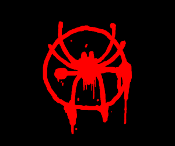

Pag 1 -
Pag 2 -
Pag 3

Curiosidades
- O pai de Miles é afro-americano e sua mãe é porto-riquenha.
- Miles nasceu e cresceu no Brooklyn e tem uma aptidão para a ciência muito parecida com seu antecessor, Peter
Parker, mas como mostrado mais tarde, seus poderes diferem dos de Peter, como sua Camuflagem Aranha e Venom
Blast.
- O maior medo de Miles é que sua identidade secreta possa causar a morte de sua família. Isso se deve em
parte porque, depois que Miles obteve seus poderes, ele testemunhou um ataque do Skrull e interveio; No
entanto, isso resultou na morte de um de seus amigos, o que o inspirou a se tornar um herói em primeiro
lugar.
- Miles tem o sobrenome de sua mãe, Morales, em vez do de seu pai, que é Davis, porque seu pai não queria que
Miles tivesse o sobrenome de seu pai abusivo. Além disso, Jeffrey mais tarde mudou seu próprio sobrenome
para Morales para se distanciar ainda mais de sua família.
- Depois de ser integrado ao Universo Marvel Prime, as memórias de Miles da Terra-1610 são fragmentárias e
evasivas; no entanto, certos estímulos - como simbiontes - desencadeiam flashbacks de sua vida anterior, e
ele está começando a recuperar mais de suas memórias depois de ser experimentado pelo Assessor.
- Miles não considera a Ms. Marvel uma inimiga; Seu sentido de aranha não disparou quando ela se aproximou
dele, apesar de muitas vezes ser chamado de "senso de presença".
- Miles tinha treze anos quando se tornou o Homem-Aranha, e tinha quase dezessete anos quando foi deslocado
para o Universo Marvel.
- Miles afirmou que sua melhor matéria é matemática.
- Ele já escreveu fanfiction sobre si mesmo.
- Miles é membro da rede de mídia social Forums. Os Foruns eram uma plataforma de discussão da comunidade
online onde jovens super-heróis compartilhavam conhecimento e fofocas.
- Dentro do Universo Marvel, Miles é conhecido como o "Segundo Aranha" na mídia árabe.
- Miles tem TEPT (transtorno do estresse pós-traumático) relacionado aos eventos de Absolute Carnage
(Carnificina Absoluta).